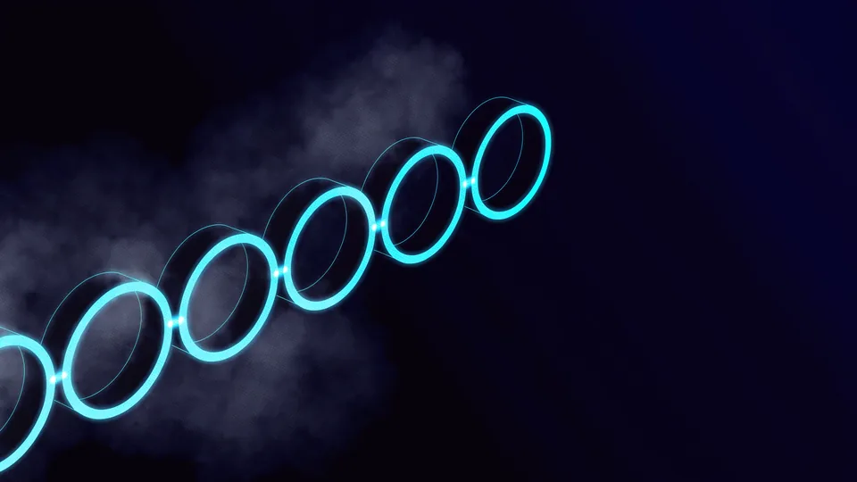

Kamerasız Video Üretimi Kimin İşine Yarar?
Küçük ekipler ve geniş katalogu olan satıcılar için işe yarar. Elinizde ürün fotoğrafı varsa, kamerasız video üretimi o kareleri harekete geçirir. Set kurmadan, ekip toplamadan ve gün ayırmadan sonuç alırsınız. Karşılığında kontrolün bir kısmını bırakırsınız; sınırları bilmek şart. Bu yazı o sınırların içinde kalan yolu anlatıyor.
Çekimsiz üretim bir kısayol değil, farklı bir yöntemdir. Kamera çekiminin yerini almaz; onun ulaşamadığı ölçeğe ulaşır. Otuz ürünlük bir katalogda tek tek çekim yapmak pahalıya gelirken, elinizdeki fotoğraflardan kısa videolar çıkarmak mümkün olur.
Nerede işe yaradığını ve nerede yetersiz kaldığını yapay zeka ile video üretimi yazısında ayrıntısıyla tarttık. Burada sınırı yeniden tartışmıyor, sınırın içinde kalan rotayı veriyoruz.
Ölçek burada belirleyici. Üç ürünlük bir işte çekim yapmak daha hızlı olabilir; üç yüz ürünlük bir katalogda ise çekimsiz üretim tek gerçekçi yol hâline gelir. Kararı ürün sayısıyla birlikte verin.
Bunu Kendi Ekibim Yapabilir mi?
Yapabilir. Rota öğrenildikten sonra ikinci tur belirgin biçimde hızlanır. Kamerasız video üretiminde zor olan araç kullanmak değil, hangi karenin kabul edilebilir olduğuna karar vermektir.
Hangi Ürünlerde Uygulanabilir?
Biçimi sabit, yüzeyi sade ve ayrıntısı az olan ürünlerde rahat çalışır. Ambalajlı gıda, kutulu elektronik ve basit ev eşyaları bu gruba girer. Kamerasız video, takı ve tekstil gibi doku taşıyan ürünlerde zorlanır. Ölçüt ürünün süslü olması değil, ayrıntısının satın alma kararını ne kadar belirlediğidir.
Ambalajlı ürünler en kolay gruptur, çünkü biçim zaten sabittir. Kutunun üzerindeki yazıyı sonradan bindirdiğinizde metin bozulma riski de ortadan kalkar.
Doku taşıyan ürünlerde ise kamerasız video hızla sınırına ulaşır. Kumaşın örgüsü, derinin gözenekleri ve taşın parlaklığı her karede biraz değişir; müşteri bunu ekranda fark etmese de elinde fark eder.
Aynı Katalogda İki Yol Yürütebilir misiniz?
Yürütebilirsiniz ve çoğu zaman doğrusu budur. Ambalajlı ürünleri çekimsiz üretirsiniz, doku taşıyanları kamerayla çekersiniz. Videoyu kamerasız çıkarmak katalogun tamamı için değil, uygun grup için bir çözümdür.
Adım Adım Nasıl İlerlersiniz?
Yedi adım var ve sırayla yürür. Önce kaynak görselleri toplar, sonra sahneyi kurarsınız. Hareketi ekler, sesi yerleştirir ve mecra sürümlerini çıkarırsınız. Kamerasız video üretiminde en çok atlanan adım kalite kontrolüdür. Adımları atlayan ekipler, düzeltmeyi en pahalı anda yapar. Sıra bozulduğunda tur sayısı hızla artar.
Aşağıdaki sırayı bozmayın. Her adım bir öncekinin çıktısını kullanır.
- Kaynak görselleri toplayın — en yüksek çözünürlüklü, temiz fonlu kareler.
- Ürünü fondan ayırın — kenarları temiz bir kesim yapın.
- Kurgu ortamını kurun — zemin, fon ve ışık yönünü belirleyin.
- Devinimi ekleyin — yavaş ve tek yönlü hareket en güvenlisidir.
- Metni sonradan bindirin — üretilen karede yazıya güvenmeyin.
- Gözle denetim yapın — kareleri gerçek ürünle yan yana koyun.
- Mecra sürümlerini çıkarın — oran ve süre listesine göre.
Yedinci adımın listesini ürün videosu formatları yazısında çıkarmıştık. Video üretimini kamerasız yürütürken de aynı teslim listesi geçerlidir.
Adımları bir kontrol listesine dökün ve her üründe aynı listeyi kullanın. Ekipteki farklı kişiler aynı rotayı yürüttüğünde çıktı da tutarlı olur. Kamerasız video üretiminde tutarlılık, tek tek kalitelerden daha çok işe yarar.
Hangi Adım En Çok Zaman Alır?
Genelde ikinci adım. Ürünü fondan temiz ayırmak, sonraki her adımın kalitesini belirler. Kenarları özensiz bir kesim, en iyi sahnede bile kendini belli eder.
Kalite Kontrolünde Neye Bakarsınız?
Dört şeye bakın: ürünün biçimi, üzerindeki yazı, renk tonu ve hareketin doğallığı. Kareyi tek tek durdurup gerçek ürünle yan yana koyun. Kamerasız video çıktısında en sık kayan şey ambalaj yazısıdır. Şüphe duyduğunuz her kareyi baştan üretmek, yayınlayıp geri çekmekten ucuzdur. Bu karşılaştırmayı ürünü bilen biri yapmalı.
Gözle denetim için basit bir yöntem yeter: videoyu durdurup ürün fotoğrafını yanına açın. Renk tonu ve oran farkı bu karşılaştırmada hemen görünür.
Hareketin doğallığı da ayrı bir başlıktır. Yavaş ve tek yönlü bir devinim güvenlidir; ani dönüşler ve yakın plan geçişler sapmayı büyütür. Şüpheye düştüğünüzde hareketi azaltın.
Denetimi yapan kişiyi de sabitleyin. Her turda başka biri bakarsa ölçüt kayar; aynı göz, aynı eşiği korur. Bu kişi tercihen ürünü elinde tutmuş olmalı.
Kaç Karede Bir Durmalı?
Kısa videolarda saniyede bir durak yeterlidir. Ürünün döndüğü ya da yaklaştığı anlar ise kare kare kontrol ister; sapma çoğu zaman orada başlar.
Hangi Durumda Vazgeçmeli?
Ürün ayrıntısı satın alma kararını belirliyorsa vazgeçin. Takı, kumaş, gıda ambalajının içi ve teknik ürünlerin bağlantı noktaları bu gruba girer. Kamerasız video bu ürünlerde tanıtım değil, hayal kırıklığı üretir. Kararı zorlamak yerine kısa bir kamera çekimi planlamak daha ucuza gelir. Sınırı kabul etmek, sonradan özür dilemekten iyidir.
Vazgeçmek tümüyle vazgeçmek anlamına gelmez. Ürünü kamerayla çekip sahneyi üretmek, iki yolun en dengeli birleşimidir; çekim yerini nasıl seçtiğimizi stüdyo mu mekân mı yazısında anlattık.
Kararı ürün grubuna göre verin, katalog geneline göre değil. Aynı katalogda bazı ürünler çekimsiz üretime uygunken bazıları kamera ister; ikisini ayırmak en verimli yoldur.
Ayırma kararını bir kez verip listeye yazın. Her yeni üründe baştan tartışmak zaman kaybıdır; grup kuralı bir kez kurulduğunda ekip kendi karar verir.
“Zor olan araç kullanmak değil, hangi karenin kabul edilebilir olduğuna karar vermek. O kararı ürünü bilen kişi verir.”
— TasarımMania prodüksiyon notu
İlk Videonuzu Birlikte Çıkaralım
Birlikte çıkarmak en hızlı öğrenme yolu. Ürün listenizi, elinizdeki görselleri ve yayın mecralarınızı konuşuyoruz. Elinizde bir araç önerisi değil, uygulanabilir bir rota kalıyor. Kamerasız video üretimini kendi ekibinizle sürdürebilecek hâle gelmeniz de amacın parçası. Amaç şu: ilk turda birlikte, ikinci turda siz.
İlk turda hangi ürünlerin bu yola uygun olduğunu birlikte ayırırız. Yapay zeka destekli prodüksiyon ve ürün videosu sayfalarımızı inceleyebilirsiniz.
Kamerasız video üretimini bir kerelik iş gibi değil, katalog büyüdükçe tekrarlanan bir tur gibi kurarız. Rota bir kez oturduğunda yeni ürün eklemek yalnız birkaç saat alır.

Adımlar, çıktıları ve en sık yapılan hata
| Adım | Çıktısı | En sık hata |
|---|---|---|
| Kaynak toplama | Yüksek çözünürlüklü temiz kareler | Sıkıştırılmış görselle başlamak |
| Fondan ayırma | Kenarları temiz kesim | Özensiz kenar bırakmak |
| Kurgu ortamı | Zemin, fon ve ışık yönü | Işık yönünü ürünle çelişik kurmak |
| Devinim | Yavaş, tek yönlü hareket | Ani dönüş ve yakın plan |
| Metin bindirme | Okunur marka ve fiyat yazısı | Yazıyı üretilen kareye bırakmak |
| Gözle denetim | Onaylı kare listesi | Adımı tümüyle atlamak |
| Mecra sürümleri | Oran ve süre paketi | Tek dosyayla yetinmek |
Ürün listenizi, elinizdeki görselleri ve yayın mecralarınızı konuşalım; ilk turu birlikte yürütelim, ikinci turda ekibiniz kendi başına devam etsin.
Kapsam çıkaralım Hizmet sayfasını görKamerasız video üretimi elinizdeki fotoğrafları harekete geçiren yedi adımlık bir rotadır. Adımları sırayla uygulayın, altıncı adımı asla atlamayın ve ürün ayrıntısının satın alma kararını belirlediği yerlerde kameraya dönmekten çekinmeyin.